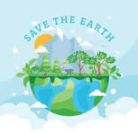
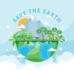

Environmental Protection
Save the Earth
Environmental protection helps keep our planet clean and healthy.

Environmental protection helps keep our planet clean and healthy.
Saving the Earth is a shared responsibility that affects every living being. Our planet provides us with clean air, water, food, and natural resources, yet human activities such as deforestation, pollution, and climate change are putting these systems at risk. Protecting the environment helps maintain biodiversity, reduces the impact of natural disasters, and ensures that future generations can enjoy a healthy and balanced world.
Every small action can make a big difference in saving the Earth. Conserving energy, reducing waste, recycling, planting trees, and protecting wildlife all contribute to a cleaner and safer planet. By raising awareness and choosing sustainable lifestyles, individuals and communities can work together to protect nature and promote a greener, more sustainable future environment